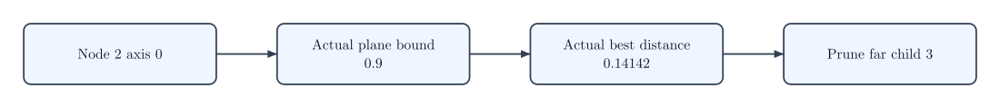
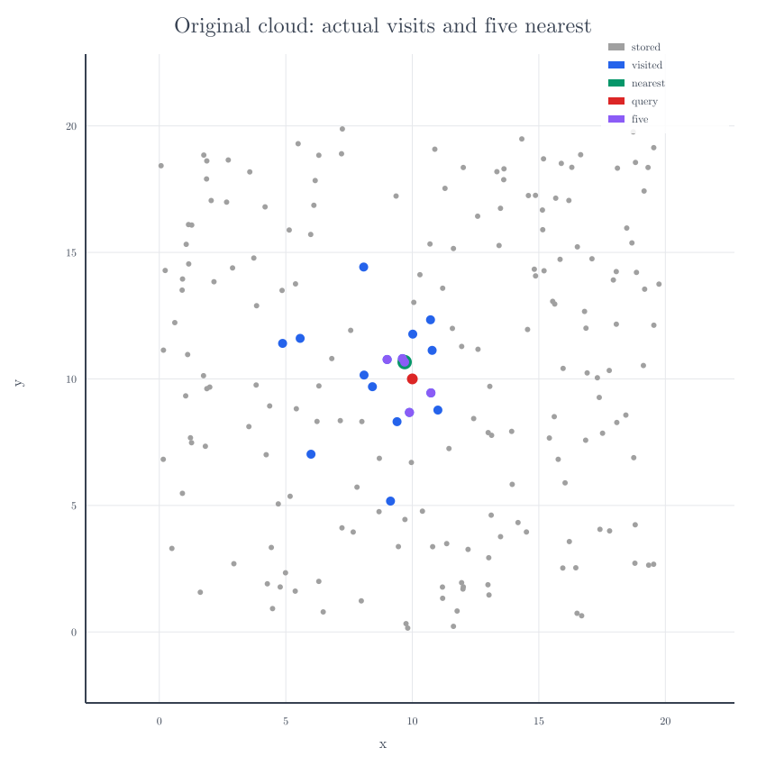
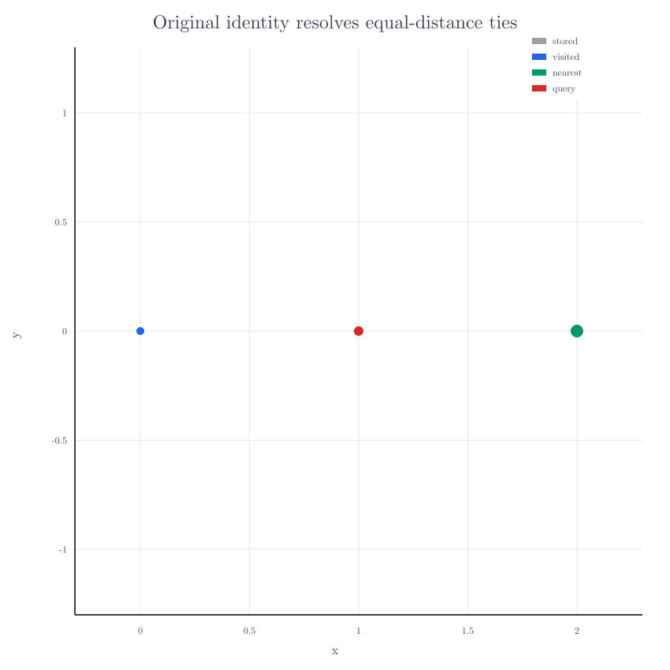
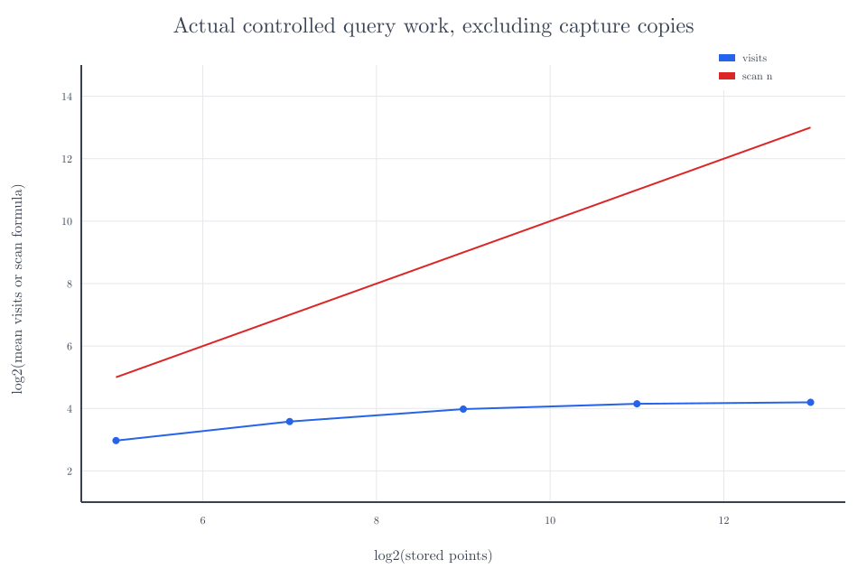

A k-d tree query: inspect the branch that was actually pruned
Abstract
A balanced planar k-d tree alternates median split axes and prunes subtrees whose split plane cannot improve the incumbent distance. We begin with one actual pruning decision, retain the original200-point query and five-nearest result, and cover duplicates, inclusive radii and distance-range failures. Native histories expose producing visits and post-near-subtree decisions without replay. Measured node counts are separated from construction, trace copies and distribution-dependent performance expectations.
Read an actual pruning decision first
Use five points and query (.1,.1). The first native record type inspects a point; the second tests a nonnull far subtree after completing the near traversal. The diagram selects an actual pruned far child, with the recorded plane bound and incumbent distance. It does not reconstruct another nearest search.
#include <dm/dm.hpp>
int main() {
std::filesystem::create_directories("build");
const dm::geometry::KDTree2D tree({{0, 0}, {2, 0}, {1, 3}, {4, 2}, {-2, 1}});
const auto t = tree.nearest_trace({.1, .1});
std::print("| event | kind | original node | axis | actual measure | best id after | explore far |\n| " "---: | --- | ---: | ---: | ---: | ---: | --- |\n");
for (std::size_t i = 0; i < t.probes.size(); ++i) {
const auto &e = t.probes[i];
std::print("| {} | {} | {} | {} | {:.12f} | {} | {} |\n", i,
e.action == dm::geometry::KDProbeAction::Visit ? "point"
: "plane", e.original_index, e.axis, e.measure,
e.best_index_after, e.explore_far);
}
const auto it =
std::find_if(t.probes.begin(), t.probes.end(), [](const auto &e) {
return e.action == dm::geometry::KDProbeAction::FarPlane &&
!e.explore_far;
});
if (it == t.probes.end())
throw std::runtime_error("pruning witness");
dm::graphics::Diagram d;
d.node("node", {0, 0},
std::format("Node {} axis {}", it->original_index, it->axis)).node(
"bound", {5, 0}, std::format("Actual plane bound\n{:.5g}", it->measure)).node("best", {10, 0}, std::format("Actual best distance\n{:.5g}", it->best_distance_before)).node("decision", {15, 0}, std::format("Prune far child {}", it->child_index)).edge("node", "bound").edge("bound", "best").edge("best", "decision").save_svg("build/kdtree_prune.svg");
}| event | kind | original node | axis | actual measure | best id after | explore far |
|---|---|---|---|---|---|---|
| 0 | point | 2 | 0 | 3.036445290138 | 2 | false |
| 1 | point | 4 | 1 | 2.284731931759 | 4 | false |
| 2 | point | 0 | 0 | 0.141421356237 | 0 | false |
| 3 | plane | 2 | 0 | 0.900000000000 | 0 | false |

Derive the plane lower bound
At a node splitting coordinate a at s, every point on the far side differs from query q along that coordinate by at least q_a−s. Euclidean distance cannot be smaller than one coordinate difference. Therefore, in exact geometry,
The native traversal inspects the current point, visits the near child, then uses the updated incumbent for the far decision. It explores equality to retain deterministic original-index ties. The tree uses median partitions and alternates x/y; equal split coordinates are ordered by the other coordinate then original id. Construction is expected O(n log(n+1)) work with O(n) owned nodes and logarithmic height. Balanced height does not imply a logarithmic nearest-query bound for every point/query distribution: worst-case all nodes can be visited.
Distances use long-double coordinate differences and hypot, avoiding raw double square overflow/underflow. They remain rounded metrics, not exact-real certificates for arbitrarily close distances. Equal computed distances prefer the earliest original input identity. Nonfinite input/query coordinates reject; a nonfinite widened distance throws on platforms whose long double cannot hold it.
Retain the original200-point example
The fixture keeps mt19937 seed9001, uniform[0,20) draws and original order. Exact distribution mapping is standard-library dependent. The query remains (10,10), and the same tree returns its five nearest points. The plot highlights actual nearest-query visits and the five selected neighbors; it does not imply that every stored point was inspected.
#include <dm/dm.hpp>
int main() {
std::filesystem::create_directories("build");
const auto points = dm::geometry::kd_demo_points();
const dm::geometry::KDTree2D tree(points);
const dm::geometry::Point2D q{10, 10};
const auto t = tree.nearest_trace(q);
const auto knn = tree.k_nearest(q, 5);
std::print("| actual nearest original id | x | y | widened distance | visited nodes | pruned subtrees " "|\n| ---: | ---: | ---: | ---: | ---: | ---: |\n| {} | {:.12f} | {:.12f} | {:.12f} | {} | " "{} |\n",
t.original_index, t.point.x, t.point.y, t.distance,
t.work.visited_nodes, t.work.pruned_subtrees);
std::print("\n| nearest rank | x | y | widened distance |\n| ---: | ---: | ---: | ---: |\n");
std::vector<double> x, y;
for (std::size_t i = 0; i < knn.size(); ++i) {
const auto &p = knn[i];
std::print("| {} | {:.12f} | {:.12f} | {:.12f} |\n", i, p.x, p.y,
std::hypot(static_cast<long double>(p.x) - q.x,
static_cast<long double>(p.y) - q.y));
x.push_back(p.x);
y.push_back(p.y);
}
auto plot = dm::geometry::kd_trace_plot(t);
plot.points(x, y, "five", {139, 92, 246}, 5).title("Original cloud: actual visits and five nearest").save_svg("build/kdtree_original.svg");
}| actual nearest original id | x | y | widened distance | visited nodes | pruned subtrees |
|---|---|---|---|---|---|
| 181 | 9.696060601039 | 10.664575858287 | 0.730780561905 | 17 | 10 |
| nearest rank | x | y | widened distance |
|---|---|---|---|
| 0 | 9.696060601039 | 10.664575858287 | 0.730780561905 |
| 1 | 9.609736836657 | 10.802761713984 | 0.892598289322 |
| 2 | 10.734421517018 | 9.447858962096 | 0.918822447699 |
| 3 | 9.004813773796 | 10.768012663586 | 1.257075604828 |
| 4 | 9.885423913731 | 8.675077149983 | 1.329867752087 |

Duplicates, radii and numerical range
Original identities distinguish duplicate points, and k-nearest retains their multiplicity. Its heap orders by widened distance then original id and returns nearest first, clamping k to tree size. Radius queries include the boundary; negative or NaN radii reject, while positive infinity includes all points. An empty tree has no nearest and throws, but k-nearest/radius return empty after validating the query.
The subnormal and extreme controls below expose old square-distance failures: raw double squares could make both candidate distances zero or infinity. Widened hypot distinguishes these particular inputs. That improvement is not a proof of exact ordering for every nearly tied binary64 configuration. Extreme point clouds need not have representable padded plotting spans, so only the ordinary duplicate-tie cloud is drawn.
#include <dm/dm.hpp>
int main() {
std::filesystem::create_directories("build");
std::print("| control | actual nearest original id | stored count |\n| --- | ---: | ---: |\n");
const double d =
std::numeric_limits<double>::denorm_min(), m =
std::numeric_limits<double>::max();
const auto show =
[](const char *name, const std::vector<dm::geometry::Point2D> & p,
dm::geometry::Point2D q) {
const dm::geometry::KDTree2D tree(p);
std::print("| {} | {} | {} |\n", name,
tree.nearest_trace(q).original_index, tree.size());
};
show("duplicate/equal-distance tie", {{2, 0}, {0, 0}, {2, 0}}, {1, 0});
show("subnormal distances", {{3 * d, 0}, {d, 0}}, {0, 0});
show("extreme distances", {{m, 0}, {-m / 2, 0}}, {0, 0});
const dm::geometry::KDTree2D tree({{2, 0}, {0, 0}, {2, 0}});
std::print("\n| query control | actual returned count |\n| --- | ---: |\n| k zero | {} |\n| k exceeds " "size | {} |\n| inclusive radius one | {} |\n| infinite radius | {} |\n",
tree.k_nearest({1, 0}, 0).size(),
tree.k_nearest({1, 0}, 9).size(),
tree.points_in_radius({1, 0}, 1).size(),
tree.points_in_radius({1, 0},
std::numeric_limits<double>::infinity()).size());
bool bad = false;
try {
(void) tree.points_in_radius({1, 0}, -1);
} catch (const std::invalid_argument &) {
bad = true;
}
if (!bad)
throw std::runtime_error("negative radius");
std::print("\nNegative radius rejects.\n");
dm::geometry::kd_trace_plot(tree.nearest_trace({1, 0})).title(
"Original identity resolves equal-distance ties").save_svg(
"build/kdtree_controls.svg");
}| control | actual nearest original id | stored count |
|---|---|---|
| duplicate/equal-distance tie | 0 | 3 |
| subnormal distances | 1 | 2 |
| extreme distances | 1 | 2 |
| query control | actual returned count |
|---|---|
| k zero | 0 |
| k exceeds size | 3 |
| inclusive radius one | 3 |
| infinite radius | 3 |
Negative radius rejects.

Measure complete controlled query sets
For each nested generated cloud, the following program issues all32 queries on an eight-unit circle around (10,10). It counts actual visited nodes and pruned subtrees from each producing trace. A complete scan would evaluate n point distances per query; that n column is an explicit baseline formula, not a separately timed implementation. Trace copying of the whole cloud is outside the query counters and adds linear overhead, so these figures are not timing comparisons.
#include <dm/dm.hpp>
int main() {
std::filesystem::create_directories("build");
std::vector<double> x, mean, scan;
std::print("| stored points | complete queries | mean actual visits | maximum visits | mean pruned " "subtrees | full-scan distance formula |\n| ---: | ---: | ---: | ---: | ---: | ---: |\n");
for (std::size_t n = 32; n <= 8192; n *= 4) {
const dm::geometry::KDTree2D tree(dm::geometry::kd_demo_points(n));
std::size_t visits = 0, maximum = 0, pruned = 0;
for (int i = 0; i < 32; ++i) {
const double angle = 2 * std::numbers::pi * i / 32;
const auto t =
tree.nearest_trace({10 + 8 * std::cos(angle),
10 + 8 * std::sin(angle)});
visits += t.work.visited_nodes;
maximum = std::max(maximum, t.work.visited_nodes);
pruned += t.work.pruned_subtrees;
}
const double average = visits / 32.;
std::print("| {} | 32 | {:.6f} | {} | {:.6f} | {} |\n", n, average,
maximum, pruned / 32., n);
x.push_back(std::log2(n));
mean.push_back(std::log2(average));
scan.push_back(std::log2(n));
}
auto p = dm::graphics::RPlot::create();
p.line(x, mean, "visits", {37, 99, 235}, 2).points(x, mean, "",
{37, 99, 235}, 4).line(
x, scan, "scan n", {220, 38, 38}, 2).title("Actual controlled query work, excluding capture copies").x_label("log2(stored points)").y_label("log2(mean visits or scan formula)").y_limits(1, 15).save_svg("build/kdtree_work.svg");
}| stored points | complete queries | mean actual visits | maximum visits | mean pruned subtrees | full-scan distance formula |
|---|---|---|---|---|---|
| 32 | 32 | 7.843750 | 14 | 3.843750 | 32 |
| 128 | 32 | 11.968750 | 18 | 6.343750 | 128 |
| 512 | 32 | 15.781250 | 27 | 9.531250 | 512 |
| 2048 | 32 | 17.750000 | 28 | 11.750000 | 2048 |
| 8192 | 32 | 18.343750 | 29 | 13.156250 | 8192 |

The tree owns its coordinates after construction. The legacy by-value constructor copy occurs before validation, while the new optional million-point cap is checked before internal indexed records/nodes are allocated. Zero disables that optional cap. Scalar nearest uses logarithmic recursion storage without history allocation, but can perform linear node work. K-nearest adds a bounded heap; radius output is owned and unordered by distance. Const queries have no shared mutable state.
Nearest traces additionally own the original cloud and actual point/far-plane records without replay; they remain usable after tree destruction. Their default actual-record cap is one million, zero disables it, and admission precedes the corresponding point distance or plane decision. Vector capacity, bytes, complete cloud-copy cost and peak RAM are outside that record count. Plotting uses a separate complete display-point cap and padded-span domain.
Independent Fraction squared-distance ordering checked 100 queries on integer
clouds using the represented binary64 query coordinates. All 1,789 actual
point/plane records passed distance, pruning and work-count checks. Another 100
ordinary unique-neighbor queries, including five-nearest outputs, matched the
frozen original. Native tests cover complete grid scans, duplicate identities,
radius boundaries and the documented underflow/overflow corrections; exact-real
guarantees for arbitrarily close extreme inputs are not inferred. The shared
ten-report build passed 131 native tests, 38 directly instrumented
address/undefined-behaviour sanitizer tests, 89 compiled public examples,
documentation coverage for all 388 scoped definitions and ten representative
clangd hovers. All four complete C++ report programs executed successfully and
their native figures were visually reviewed. Batch receipts are retained under
build/mepml-conversion/batch-174-183/.
Reference
Jon Louis Bentley (1975), “Multidimensional binary search trees used for associative searching”, Communications of the ACM18(9),509–517, doi:10.1145/361002.361007. This implementation fixes a balanced planar median build, widened rounded metrics and deterministic original-index ties rather than promising a distribution-free logarithmic nearest query.